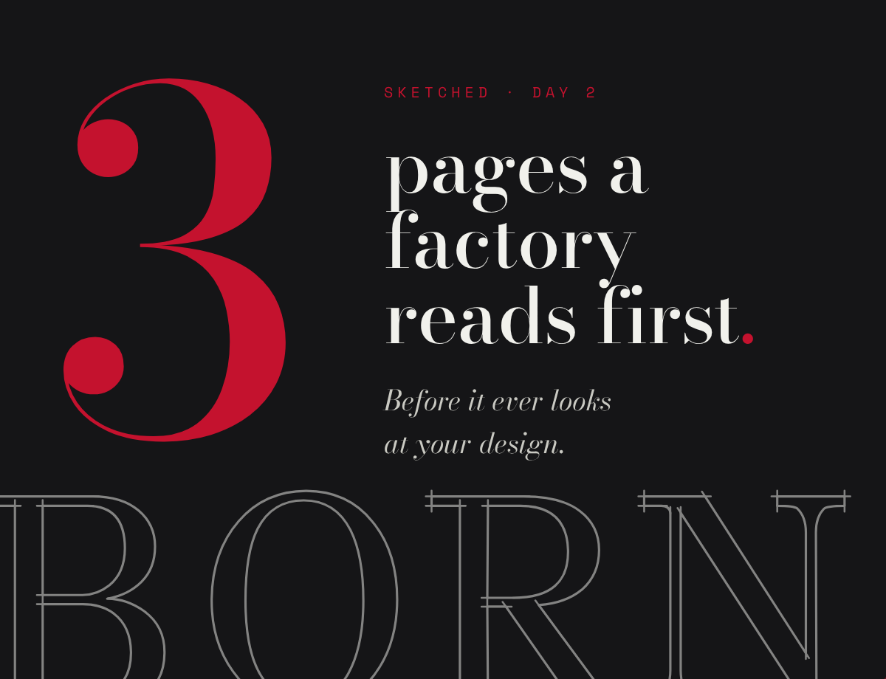
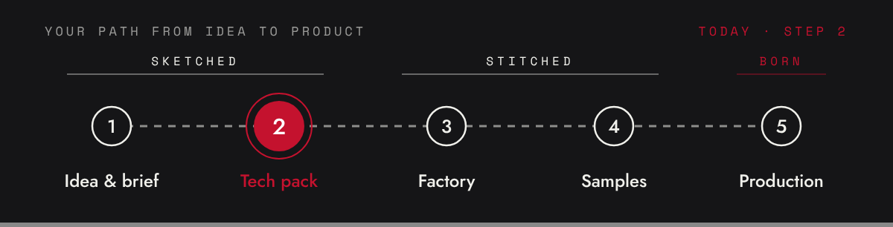
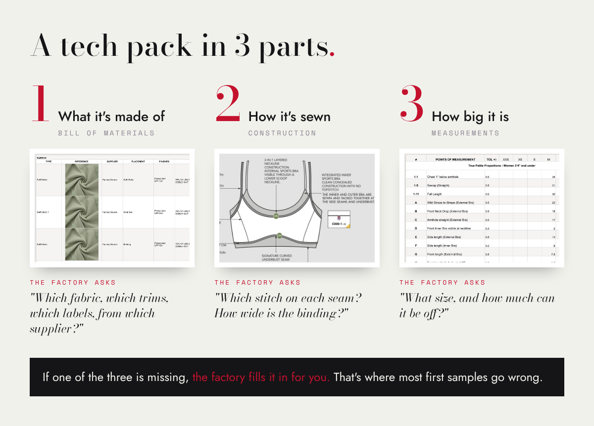

| |||||||||
 | |||||||||
 | |||||||||
Hi {{ customer.first_name | default: "there" }}, A tech pack is the instruction manual for your garment. A factory doesn't read it like a designer: it looks for three answers first. | |||||||||
 | |||||||||
In plain words
María Founder · Born Apparel Studio | |||||||||
|
Prefer to have it built for you? Custom tech packs, done with you. Send us your sketches and references: we turn them into a factory-ready tech pack. Basic, standard and advanced options.
| |||||||||
| |||||||||
Sketched to be BORN. Sketched · Stitched · BORN |